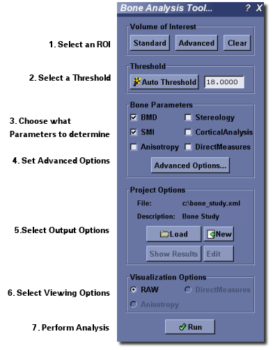
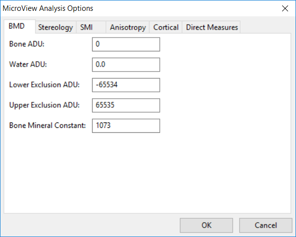
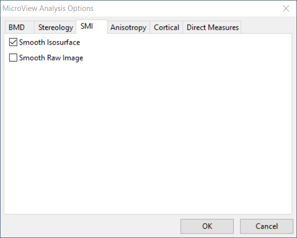
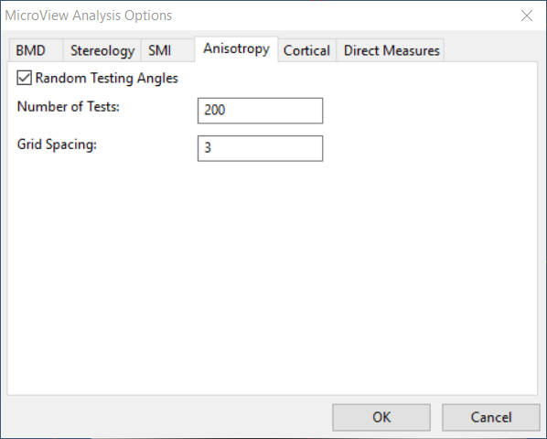
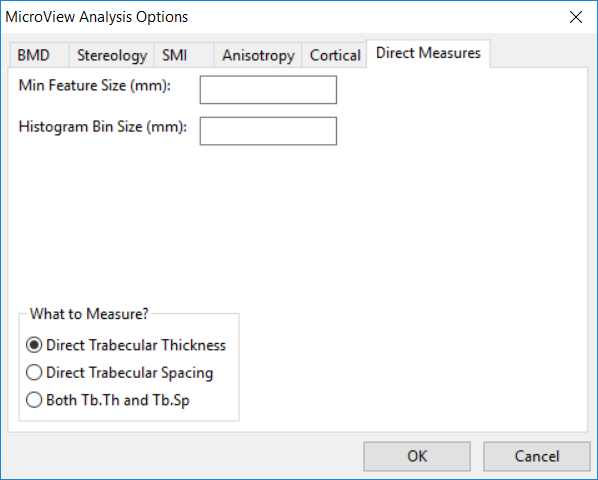
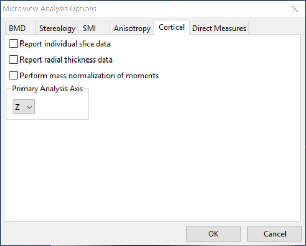
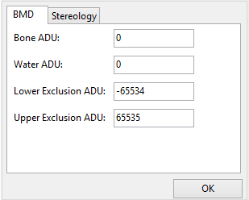

Advanced Bone Analysis Application
Advanced Bone Analysis Application
Overview
MicroView's Advanced Bone Analysis Application performs a variety of analysis and visualization tasks upon a selected region of interest within an image. The application is designed specifically for analysis of CT images of bone. The choice of which functions to perform on a given ROI, what type of visualization output to use, and how the current project or study should be structured can be selected prior to any calculation. It is possible to export the results to any or all of the following formats: plain text, CSV, Excel, or PDF.
The Advanced Bone Analysis Application contains the following analysis tools:
- BMD, which reports the bone mineral density (BMD), bone volume fraction (BVF), bone mineral content, and various other statistics;
- SMI, which reports the structure model index (SMI). SMI gives information about the curvature of the surface, and estimates how "plate-like" or "rod-like" a trabecular structure is;
- Anisotropy, which determines the degree of symmetry and orientation of a trabecular structure;
- Stereology, which reports Euler index, bone volume fraction, bone surface to bone volume ratio, trabecular plate thickness, trabecular plate number, trabecular plate separation and various other measures. The Euler index is a measure of the connectivity of a trabecular structure;
- Topology, which categorizes each voxel in a trabecular structure as being a member of either a surface, curve, or junction and provides a visual representation of this classification;
-
Direct Measures, which determines the local trabecular thickness of a bone, and provides a visual representation of this local thickness, and;
-
Cortical Bone Analysis, which determines slice-by-slice thickness, area, moment of inertia, and BMD values for cortical bone. It is to be used in conjunction with the Cortical ROI tool to perform analysis on the cortical shell of a bone.
Using the Advanced Bone Analysis Application

- Activate the Advanced Bone Analysis Application by selecting
Analyze→Bone Analysis...from MicroView's menu, or by clicking on the Bone Analysis button in the Applications group of MicroView's toolbar. - If an ROI has not already been selected, first activate an ROI plugin and select a ROI. As a convenience, the list of available ROI plugins is displayed in the choice-box in the upper left of the plugin: Choose an ROI tool in the available drop-down list, then hit the Activate ROI button to launch the tool.
- Once a ROI has been selected, enter a gray-level threshold value, that will be used to discriminate bone from non-bone voxels in the image. Either type in a threshold value in the entry field in the Threshold section or click the Auto Threshold button, to determine a best-guess threshold value automatically. If you would like to verify that the automatically selected value is appropriate, generate a histogram of the image contained within the ROI, then hit the Auto Threshold button on the histogram plot window.
- In the Bone Parameters section select the type of analysis desired. Click the Advanced Options... button to modify the default settings. The Advanced options will be discussed in more detail later in this section.
- In the Output Options section select the name of the file where the results will be stored. The results are written to an XML database file. These results are presented for review in a custom spreadsheet view. This spreadsheet view allows the results to be exported to one of the supported file formats (text, CSV, Excel, PDF). If no project file name is provided, the analysis cannot be performed. It is also possible to select an existing database file using the Load Project button. The new results can then be added to this database. More information regarding the project database can be found here.
- In the Visualization Options select RAW, Topology, Anisotropy, or Direct Measures. The options Topology, Anisotropy and Direct Measures will only be available for selection if they have been selected in the Cancellous Bone Parameters section. If one of these three options is selected, MicroView will shift focus from the Advanced Analysis dialog to the appropriate dialog for visualization when the Run button is clicked.
- Click the Run button.
Advanced Options
The Advanced Options allows the user to modify the default settings. To display the Advanced Options dialog click the Advanced Options button. In the Advanced Options dialog there are several tabs:
- The BMD tab has several variables that can be edited manually. By default the values for Bone ADU (arbitrary density unit) and Water ADU are set to the calibration constants found in the header of image file. The Lower Exclusion ADU is a gray scale value below which voxels are not included in the bone equivalent mass calculation. Similarly the Upper Exclusion ADU is a Gray scale value above which voxels are not included in the bone equivalent mass calculation. The upper and lower exclusion ADU should be set to exclude air and metal, respectively, in the bone mass calculation.
- The SMI tab has options to smooth the image prior to the generation of an isosurface and to smooth the isosurface prior to the calculation of SMI.
- In the Anisotropy tab, the Grid Spacing determines how finely the ROI is to be resampled prior to any calculations, the Number of Tests determines the number of lines to use when calculating mean intercept length (MIL), and Random Testing Angles determines whether the direction of the lines used when calculating MIL are randomly chosen.
- In the Direct Measures tab, the user has an option of what measures to compute – direct trabecular thickness, direct trabecular spacing, or both. The Minimum Feature Size in pixels can also be specified. Structures less than this size will not be used in calculating direct trabecular thickness and direct trabecular spacing.
- The Stereology tab, has an option to enable verbose output to display additional measures, and an option to enable the purify algorithm. To obtain meaningful results from Stereology, the image should be passed through this purification filter first. The purify algorithm removes spurious unconnected region.
- After all the modifications to the Advanced Options have been made, click the OK button to close the dialog.
Specific Tool Information
Bone Composition Measurement Tool

This tool performs a virtual biopsy and "ashing" to determine bone mineral content non-destructively. Image data derived from the Locus family of CT scanners may be calibrated to standard CT number, measured in Hounsfield Units (HU), and furthermore calibrated to permit determination of equivalent mass of hydroxyappetite. Results are reported as bone mineral fraction (BVF) or bone mineral density (BMD) in units of mg (HyAp)/cm3. To use this tool, launch the Advanced Bone Analysis application, define a 3D ROI, then select a threshold that discriminates bone from soft tissue. Prior to hitting the Run button, if required, click the Advanced Options... button to modify the BMD tool settings:
- Enter a value for
Bone ADU - Enter a value for
Water ADU - Enter a value for
Lower Exclusion ADU - Enter a value for
Upper Exclusion ADU
SMI Tool

Structure model index (SMI) is a parameter used to measure how "rod-like" or "plate-like" trabecular architecture is. With aging and disease, cancellous bone architecture in some sites deteriorates from plate-like to rod-like. SMI for ideal plates and rods is 0 and 3, respectively. SMI calculated for specimens with high bone volume fraction (BV/TV) can be negative.
Outputs
- SMI (unitless) - the SMI parameter
- Volume - the volume within the isosurface
- S.A. - the surface area of the isosurface
- Delta_R - distance along the normal direction each vertex is translated to estimate SA_Prime
- SA_Prime - surface area derivative
Algorithm
The SMI parameter is discussed in detail in Hillebrand97a. SMI is calculated as
where S' is the surface area derivative, V is the trabecular bone volume, and S is the surface area. The factor of 6 is used to obtain integer values for ideal plate, cylinder, and sphere models (plate = 0, cylinder = 3, sphere = 4).
The first step in calculating SMI is to create an isosurface of the trabecular bone within the ROI. The surface area and volume are directly calculated from this isosurface. The surface area derivative is estimated by calculating the change in surface area of the isosurface when the vertices are translated a small amount along their normal directions and normalizing by the magnitude of the displacement.
Note
SMI was initially used to describe structures with very few intersections between the structure elements (i.e., rods and plates) while the BV/TV is low. SMI parameter is always positive for these structures. However, if SMI analysis is applied on a dense structure with lots of intersections between the structure elements, it may give negative SMI values. This results from the surface area decreasing when dilating the surface vertices along the normals and consequently a negative S' in the equation for SMI. For example, take a plate with a hole in the center. The hole becomes smaller after the vertices are translated in the normal direction and the corresponding change in surface area is negative.
Note
For a ROI with more than 27, 000, 000 (300x300x300) voxels, the ROI image is resampled by shrinking factors 2 by 2 by 2 to reduce memory consumption and speed up the calculation.
Advanced Options
- Smooth Isosurface (default value: ON) - uses a windowed sinc function as interpolation kernel to 'relax' the mesh, making the cells better shaped and the vertices more evenly distributed. The windowed sinc function is a low-pass filter that eliminates the high frequency noise and keeps the low frequency features of bone surfaces.
- Smooth Raw Image (default value: OFF) - passes data through a Gaussian filter prior to creating isosurface. The default kernel size is 3x3x3 and default standard deviation is 1. The user can set these parameters in the advanced options.
Anisotropy Tool

Anisotropy measures the orientation of the trabecular architecture. This orientation affects the mechanical behavior of trabecular tissue and is affected by age and disease. MicroView uses the mean intercept length (MIL) method to calculate the structural anisotropy. This method measures the intersections of a test grid with the trabecular structure and calculates the fabric ellipsoid (3D ellipse). Trabecular structures with no preferred orientation have a spherical ellipsoid, while structures with more alignment in one direction have the major axis of the ellipse aligned in that direction.
Output
- Ellipsoid Coefficient
- Eigenvector, value and principle MILs
- Ratios: \frac{a1}{a3}, \frac{a1}{a2}, \frac{a2}{a3}
Algorithm
A grid of parallel test lines is passed though the ROI and the number of intersections of the test lines with the bone/marrow interface is calculated. This procedure is performed for the number of test rotations listed in the advanced options. Each rotation of the test grid is described by two angles (theta, phi) in spherical coordinates. For each rotation, MIL is calculated as 2* BV/TV / (number of intersections / test line length). The MIL data are then fit to the equation of an ellipse using least squares. The least squares analysis provides the 6 coefficients for the best fit ellipse. An eigen analysis of the second rank tensor formed by these coefficients provides the length of the axes of the ellipsoid and their corresponding directions. The degree of anisotropy is then defined as the ratio of the lengths of the maximum and minimum axes.
Advanced Options
- Random Test Angles (default: ON) - when checked, the test grid is rotated through pseudo-random angles; otherwise the test grid is rotated step by step in theta and phi with a constant stride.
- Number of Rotations (default: 200) - number of rotations of the test grid
- Grid Spacing (default: 3) - spacing (in voxels) between test lines
Stereology Tool

MicroView can perform a simple stereology analysis of a 3D bone image. The stereology tool measures trabecular structure using similar techniques to those implemented in classical histomorphometry. 2D techniques determine estimates of trabecular thickness, spacing and density. At the same time, trabecular connectivity is quantified by calculating the Euler number for the trabecular structure. Finally, the bone surface area to volume ratio is also calculated.
To perform a stereology analysis on a CT image of a bone, launch the Advanced Bone Analysis application, define a 3D ROI, then select a threshold that discriminates bone from soft tissue. Prior to hitting the Run, if required, click the Advanced button to modify the Stereology tool settings:
Advanced Options
- Turning on
Enable verbose outputwill generate additional output measures. - Turn on the
Enable purify algorithm for Euler No. calculationoption to pass the selected image through a purification algorithm, first, before computing the Euler number. The purify algorithm removes isolated bony spicules and fills encapsulated marrow spaces. !!! Note When the purify algorithm is enabled, select a ROI where at least one of the voxels at the boundary of the ROI is equal to or above the threshold (ie. the trabecular bone must intersect the boundaries of the ROI). Passing a clipped image, through the purify filter, which has no boundary voxels equal to or above the threshold will produce a blank image from the filter. - Turn on the
Enable purify algorithm for all other calculationsoption to pass the selected image through a purification algorithm, first, before performing the other calculations.
Topology

Warning
This plugin may not be available in all versions of MicroView. This plugin can be used to determine a 3D topology of each voxel in a trabecular bone structure.
- Define a 3D ROI by using either the 7/8 keys,or by
selecting a ROI using the ROI plugin
(
Plugins→ROI Selection Tool...on the MicroView menu). - Once a ROI has been defined, activate the Topology plugin by
selecting
Topology...from thePluginsmenu. - Enter the desired file name in the
Output Filetext window. - Click the Calculate button to generate a topological image within
the selected ROI and create a report (see
Output File). - Click the Show Overlay or Hide Overlay button to show or hide the topological image.
- Once the topological image is overlaid on the original image, the
transparency of topological image can be adjusted by the checkboxes
and sliders. The voxels of the topological image are classified as
follows:
DENS- topological skeletonCE- curve edgeSE- surface edgeC- curve interiorS- surface interiorCC- curve-curve junctionSC- surface-curveSS- surface-surfacePE- profile-edgePI- profile interior
Direct Measures Tool
Direct Measures

Direct Measures calculates the trabecular thickness (Tb.Th) and separation (Tb.Sp) by fitting maximal spheres to the trabecular structure. The diameters of the spheres within the bone and marrow regions provide estimates of Tb.Th and Tb.Sp, respectively.
Output
- Tb.Th - mean trabecular thickness
- Tb.Sp - mean trabecular separation
- Histogram of voxels within spheres of incremental sizes determined in the Advanced Options
Algorithm
The algorithm is discussed in detail in. The first step is to binarize the data based on the selected threshold. For trabecular thickness, the Euclidean Distance Transform of the bone region is calculated. This results in each bone voxel being assigned a value corresponding to the distance to the nearest non-bone voxel. Next, for each bone voxel the largest sphere that fits within the bone structure is determined. Tb.Th and Tb.Sp are then calculated as the mean value assigned to all bone and marrow voxels, respectively.
Advanced Options
- Min Feature Size - determines the minimum diameter sphere used when calculating the mean value for Tb.Th and Tb.Sp.
- Histogram Bin Size - sets the bin width for the Tb.Th and Tb.Sp histograms
- What to measure? - sets which parameters are measured
- Direct Trabecular Thickness
- Direct Trabecular Separation
- Direct Tb.Th and Tb.Sp
Note
There is a limitation for ROI dimensions, which is 650x650x650. The accuracy of the Tb.Th and Tb.Sp calculation is 0.01 voxel.
Cortical Analysis Tool
Cortical Analysis

Cortical analysis is designed to be applied to the cortical shell of a bone such as a femur or humerus. The algorithm measures a wide number of different parameters of utility.
Note
The cortical analysis tool assumes that the bone is aligned with the long axis parallel to the z-axis defined in MicroView. If your sample is not oriented in this way, it must be reoriented for the results to be meaningful.
Output
By default, the output values are reported for the entire ROI. Using an advanced option, it is possible to have the values reported on a slice-by-slice basis.
- Angle X - the angle between the x-axis of the ROI and the original x-axis (not available in slice-by-slice data)
- Angle Y - the angle between the y-axis of the ROI and the original y-axis (not available in slice-by-slice data)
- Angle Z - the angle between the z-axis of the ROI and the original z-axis (not available in slice-by-slice data)
- Number of Slices - number of slices in the ROI (not available in slice-by-slice data)
- Mean Thickness - the average thickness of the cortical bone
- Std Dev Thickness - the standard deviation of the thickness of the cortical bone
- Ixx - the moment about the x-axis of the cortical bone
- Iyy - the moment about the y-axis of the cortical bone
- Izz - the moment about the z-axis of the cortical bone
- Ixy - the bending xy moment of the cortical bone
- Inner Perimeter - the inner perimeter of the cortical bone
- Outer Perimeter - the outer perimeter of the cortical bone
- Marrow Area - the area contained inside the cortical bone
- Cortical Area - the area of the cortical bone only
- Total Area - the total cross-sectional area of the bone
- BMD - Bone mineral density
- BMC - Bone mineral content
- Centroid - the position of the centroid of the volume
Algorithm
The first parameters computed are the moments and the centroid location. Once the centroid location has been determined, rays are projected from this location towards the edge of the ROI. When the ray first intersects the edge of the cortical bone, this point is noted as an interior point. When the ray intersects the second edge of the cortical bone, this is noted as an exterior point. The lists of interior and exterior points are then used for thickness, perimeter and area computations.
Advanced Options
- Report individual slice data - turns on reporting of all output measures listed above but on a slice-by-slice basis rather than for the entire volume
- Report radial thickness data - turns on reporting of cortical thickness measurements at ten degree intervals around the circumference of each slice
- Perform mass normalization of moments - normalizes all of the moment measures by the total mass of cortical bone
 Basic Bone Analysis Application
Basic Bone Analysis Application
Overview
MicroView's Basic Bone Analysis Application performs a variety of analysis upon a selected region of interest within an image. The application is designed specifically for analysis of CT images of bone. The choice of which functions to perform on a given ROI, can be selected prior to any calculation. The results could be stored or appended in user specified plain text files.
The Basic Bone Analysis Application contains the following analysis tools:
- BMD, which reports the bone mineral density (BMD), bone volume fraction (BVF), bone mineral content, and various other statistics;
- Stereology, which reports Euler index, bone volume fraction, bone surface to bone volume ratio, trabecular plate thickness, trabecular plate number, trabecular plate separation and various other measures. The Euler index is a measure of the connectivity of a trabecular structure.
Tip
The commercial package Advanced Bone Analysis Application contains analysis tools for SMI, Anisotropy, and Stereology. It also offers project and study management tools and support PDF and Excel outputs.
Using the Basic Bone Analysis Application

- Activate the Basic Bone Analysis Application by selecting
Analyze→Bone Analysis...from MicroView's menu, or by clicking on the Bone Analysis button in the Applications group of MicroView's toolbar. - If an ROI has not already been selected, first activate an ROI plugin and select a ROI. As a convenience, the list of available ROI plugins is displayed in the choice-box in the upper left of the plugin: Choose an ROI tool in the available drop-down list, then hit the Activate button to launch the tool.
- Once a ROI has been selected, enter a gray-level threshold value, that will be used to discriminate bone from none-bone voxels in the image. Either type in a threshold value in the entry field in the Threshold section or click the Auto Threshold button, to determine a best-guess threshold value automatically. If you would like to verify that the automatically selected value is appropriate, generate a histogram of the image contained within the ROI, then hit the Auto Threshold button on the histogram plot window.
- In the Bone Parameters section select the type of analysis desired. Click the Advanced Options... button to modify the default settings. The Advanced options will be discussed in more detail later in this section.
- In the Output File section select the name of the file where the results will be stored. The results are written to a plain text file. These results are presented for review after each successful execution. It is also possible to append the results to an existing text file by checking the Append checkbox button.
- Click the Run button to perform the analysis.
Advanced Options
The Advanced Options allows the user to modify the default settings. To display the Advanced Options dialog click the Advanced Options... button. In the Advanced Options dialog there are several tabs:
- The BMD tab has several variables that can be edited manually. By default the values for Bone ADU (arbitrary density unit) and Water ADU are set to the calibration constants found in the header of the currently loaded image file (not all file types support this). The Lower Exclusion ADU is a gray scale value below which voxels are not included in the bone equivalent mass calculation. Similarly the Upper Exclusion ADU is a Gray scale value above which voxels are not included in the bone equivalent mass calculation. The upper and lower exclusion ADU should be set to exclude air and metal, respectively, in the bone mass calculation.
- The Stereology tab, has an option to enable verbose output to display additional measures, and an option to enable the purify algorithm. To obtain meaningful results from Stereology, the image should be passed through this purification filter first. The purify algorithm removes spurious unconnected region.
- After all the modifications to the Advanced Options have been made, click the OK button to close the dialog.
Specific Tool Information
Bone Composition Measurement Tool
Bone Composition

This tool performs a virtual biopsy and "ashing" to determine bone mineral content non-destructively. Image data derived from the Locus family of CT scanners may be calibrated to standard CT number, measured in Hounsfield Units (HU), and furthermore calibrated to permit determination of equivalent mass of hydroxyappetite. Results are reported as bone mineral fraction (BVF) or bone mineral density (BMD) in units of mg (HyAp)/cm3. To use this tool, launch the Advanced Bone Analysis application, define a 3D ROI, then select a threshold that discriminates bone from soft tissue. Prior to hitting the Run button, if required, click the Advanced Options... button to modify the BMD tool settings:
- Enter a value for
Bone ADU - Enter a value for
Water ADU - Enter a value for
Lower Exclusion ADU - Enter a value for
Upper Exclusion ADU
Stereology Tool
Stereology

MicroView can perform a simple stereology analysis of a 3D bone image. The stereology tool measures trabecular structure using similar techniques to those implemented in classical histomorphometry. 2D techniques determine estimates of trabecular thickness, spacing and density. At the same time, trabecular connectivity is quantified by calculating the Euler number for the trabecular structure. Finally, the bone surface area to volume ratio is also calculated.
To perform a stereology analysis on a CT image of a bone, launch the Advanced Bone Analysis application, define a 3D ROI, then select a threshold that discriminates bone from soft tissue. Prior to hitting the Run, if required, click the Advanced button to modify the Stereology tool settings:
- Optionally click on the
Enable Purifyoption to pass the selected image through a purification algorithm, first, before performing the stereology analysis. The purify algorithm removes isolated bony spicules and fills encapsulated marrow spaces. Note: When the purify algorithm is enabled, select a ROI where at least one of the voxels at the boundary of the ROI is equal to or above the threshold (ie. the trabecular bone must intersect the boundaries of the ROI). Passing a clipped image, through the purify filter, which has no boundary voxels equal to or above the threshold will produce a blank image by the filter. - Optionally uncheck the Enable verbose output to disable the verbose output.